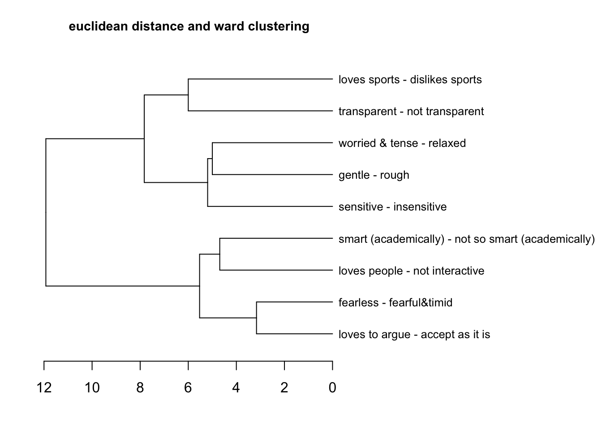
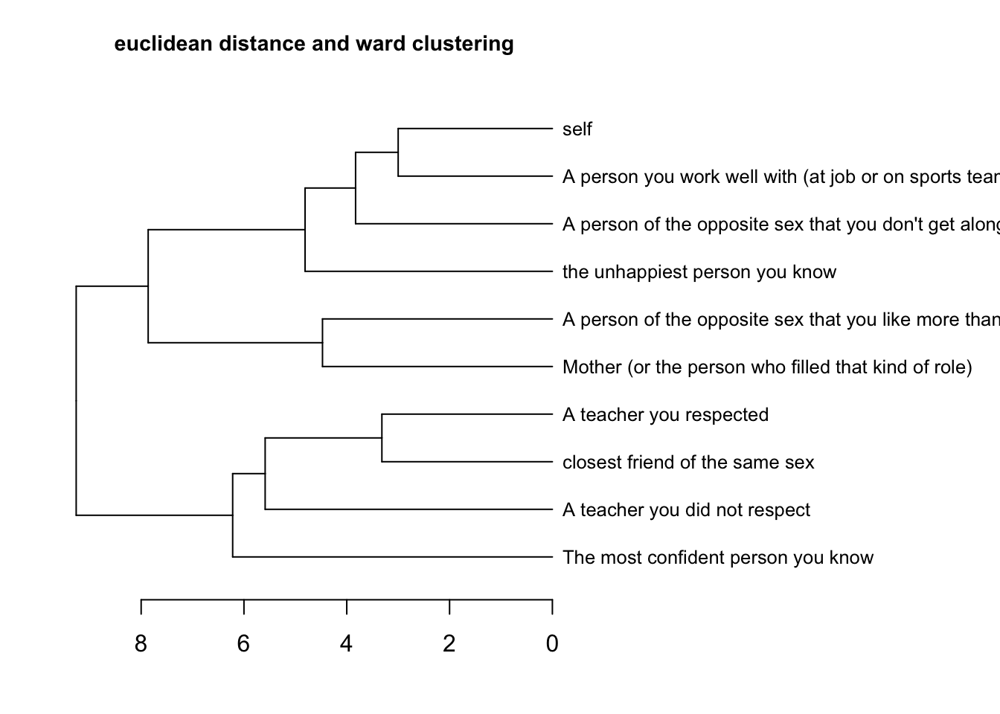
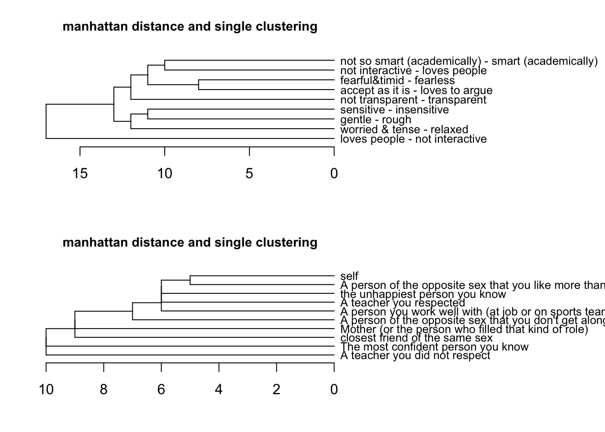
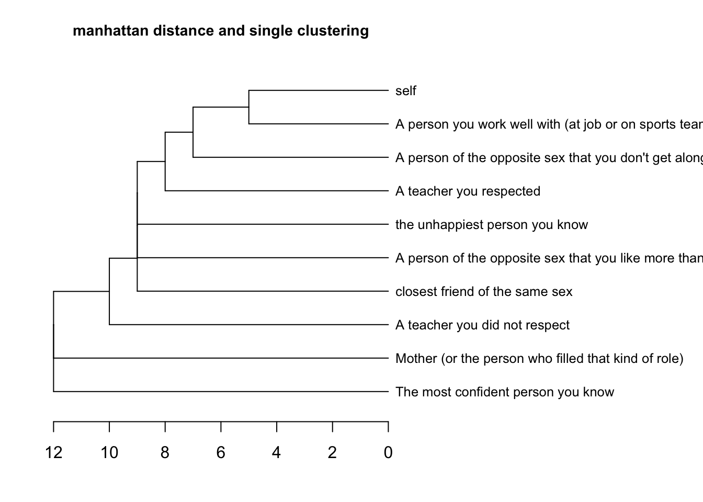
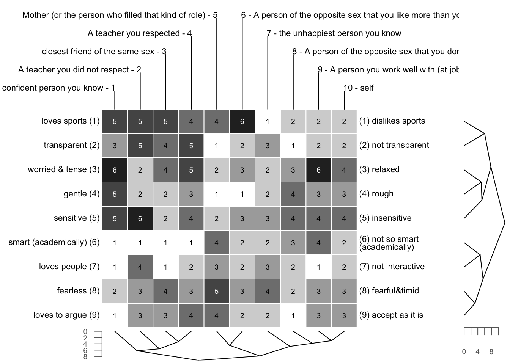

Clustering of constructs and elements
Description
A method for identifying structures in construct system is cluster analysis. Any distance or similarity measure accounting for a certain type of association could be used as a cluster criterion. Traditionally mostly Euclidean and Manhattan distances have been used. The earliest implementation of a cluster algorithm for repertory grids was incorporated in the program FOCUS (Shaw & Thomas, 1978).
Several distance measure can be selected (explanations from ?dist dcoumentation):
euclidean: Squared distance between the two vectors (L2 norm)manhattan: Also called city-block-distance, absolute distance between the two vectors (L1 norm).minkowski: The p norm, the pth root of the sum of the pth powers of the differences of the components.maximum: Maximum distance between two components of x and y (supremum norm)canberra: \(\sum(|x_i - y_i| / |x_i + y_i|)\) Terms with zero numerator and denominator are omitted from the sum and treated as if the values were missing. This is intended for non-negative values (e.g. counts).binary: The vectors are regarded as binary bits, so non-zero elements are on and zero elements are off. The distance is the proportion of bits in which only one is on amongst those in which at least one is on.
Also several cluster methods can be selected (explanations from ?hclust documentation).
ward.D,ward.D2: Ward’s minimum variance method aims at finding compact, spherical clusters.complete: The complete linkage method finds similar clusters.single: The single linkage method (which is closely related to the minimal spanning tree) adopts a ‘friends of friends’ clustering strategy.
The other methods can be regarded as aiming for clusters with characteristics somewhere between the single and complete link methods:
averagemcquittymediancentroid
The distance and cluster methods can be combined as wished.
R-Code
Clustering
When the function cluster is called dendrograms of the construct and element clustering are drawn.
cluster(bell2010)
The function also returns the reordered matrix invisibly. To see the reordered grid save it into a new object.
x <- cluster(bell2010)
x
RATINGS:
er (or the person who fill - 5 6 - A person of the opposite
A teacher you respected - 4 | | 7 - the unhappiest person y
friend of the same sex - 3 | | | | 8 - A person of the oppos
you did not respect - 2 | | | | | | 9 - A person you work w
fident person you - 1 | | | | | | | | 10 - self
| | | | | | | | | |
loves sports (1) 5 5 5 4 4 6 1 2 2 2 (1) dislikes spor
transparent (2) 3 5 4 5 1 2 3 1 2 2 (2) not transpare
orried & tense (3) 6 2 4 5 2 3 2 3 6 4 (3) relaxed
gentle (4) 5 2 2 3 1 1 2 4 3 3 (4) rough
sensitive (5) 5 6 2 4 2 3 3 4 4 4 (5) insensitive
(academically) (6) 1 1 1 1 4 2 2 3 4 2 (6) not so smart
loves people (7) 1 4 1 2 3 2 3 2 1 2 (7) not interacti
fearless (8) 2 3 4 3 5 3 4 2 3 3 (8) fearful&timid
loves to argue (9) 1 3 3 4 4 2 2 1 3 3 (9) accept as it The function also allows to only cluster constructs or elements. To only cluster the constructs us the following code. Again a dendrogram is drawn and a grid with reordered constructs is returned.
x <- cluster(bell2010, along=1)
x
RATINGS:
er (or the person who fill - 5 6 - A person of the opposite
A teacher you respected - 4 | | 7 - the unhappiest person y
friend of the same sex - 3 | | | | 8 - A person you work wel
you did not respect - 2 | | | | | | 9 - self
fident person you - 1 | | | | | | | | 10 - A person of the
| | | | | | | | | |
loves sports (1) 5 5 5 4 4 6 1 2 2 2 (1) dislikes spor
transparent (2) 3 5 4 5 1 2 3 2 2 1 (2) not transpare
orried & tense (3) 6 2 4 5 2 3 2 6 4 3 (3) relaxed
gentle (4) 5 2 2 3 1 1 2 3 3 4 (4) rough
sensitive (5) 5 6 2 4 2 3 3 4 4 4 (5) insensitive
(academically) (6) 1 1 1 1 4 2 2 4 2 3 (6) not so smart
loves people (7) 1 4 1 2 3 2 3 1 2 2 (7) not interacti
fearless (8) 2 3 4 3 5 3 4 3 3 2 (8) fearful&timid
loves to argue (9) 1 3 3 4 4 2 2 3 3 1 (9) accept as it To only cluster the elements set along=2.
x <- cluster(bell2010, along=2)
x
RATINGS:
er (or the person who fill - 5 6 - A person of the opposite
A teacher you respected - 4 | | 7 - the unhappiest person y
friend of the same sex - 3 | | | | 8 - A person of the oppos
you did not respect - 2 | | | | | | 9 - A person you work w
fident person you - 1 | | | | | | | | 10 - self
| | | | | | | | | |
transparent (1) 3 5 4 5 1 2 3 1 2 2 (1) not transpare
loves sports (2) 5 5 5 4 4 6 1 2 2 2 (2) dislikes spor
gentle (3) 5 2 2 3 1 1 2 4 3 3 (3) rough
orried & tense (4) 6 2 4 5 2 3 2 3 6 4 (4) relaxed
sensitive (5) 5 6 2 4 2 3 3 4 4 4 (5) insensitive
loves people (6) 1 4 1 2 3 2 3 2 1 2 (6) not interacti
(academically) (7) 1 1 1 1 4 2 2 3 4 2 (7) not so smart
loves to argue (8) 1 3 3 4 4 2 2 1 3 3 (8) accept as it
fearless (9) 2 3 4 3 5 3 4 2 3 3 (9) fearful&timidTo apply different distance measures and cluster methods us the arguments dmethod and cmethod (here manhattan distance and single linkage clustering).
x <- cluster(bell2010, dmethod="manh", cmethod="single")
x
RATINGS:
rson of the opposite sex t - 5 6 - A person you work well wi
(or the person who fill - 4 | | 7 - A teacher you respected
friend of the same sex - 3 | | | | 8 - the unhappiest person
onfident person you - 2 | | | | | | 9 - A person of the opp
ou did not respect - 1 | | | | | | | | 10 - self
| | | | | | | | | |
(academically) (1) 7 7 7 4 5 4 7 6 6 6 (1) smart (academ
ot interactive (2) 4 7 7 5 6 7 6 5 6 6 (2) loves people
fearful&timid (3) 5 6 4 3 6 5 5 4 5 5 (3) fearless
ccept as it is (4) 5 7 5 4 7 5 4 6 6 5 (4) loves to argu
ot transparent (5) 3 5 4 7 7 6 3 5 6 6 (5) transparent
sensitive (6) 6 5 2 2 4 4 4 3 3 4 (6) insensitive
gentle (7) 2 5 2 1 4 3 3 2 1 3 (7) rough
orried & tense (8) 2 6 4 2 3 6 5 2 3 4 (8) relaxed
loves people (9) 4 1 1 3 2 1 2 3 2 2 (9) not interactiTo apply different methods to the constructs and the rows, use a two-step approach.
x <- cluster(bell2010, along=1) # cluster constructs using default methods
x <- cluster(x, along=2, dm="manh", cm="single") # cluster elements using manhattan distance and single linkage clustering
x
RATINGS:
rson of the opposite sex t - 5 6 - the unhappiest person you
t friend of the same sex - 4 | | 7 - A teacher you respected
er you did not respect - 3 | | | | 8 - A person of the oppos
the person who fill - 2 | | | | | | 9 - A person you work w
fident person you - 1 | | | | | | | | 10 - self
| | | | | | | | | |
insensitive (1) 3 6 2 6 5 5 4 4 4 4 (1) sensitive
rough (2) 3 7 6 6 7 6 5 4 5 5 (2) gentle
relaxed (3) 2 6 6 4 5 6 3 5 2 4 (3) worried & ten
loves people (4) 1 3 4 1 2 3 2 2 1 2 (4) not interacti
(academically) (5) 1 4 1 1 2 2 1 3 4 2 (5) not so smart
loves to argue (6) 1 4 3 3 2 2 4 1 3 3 (6) accept as it
fearless (7) 2 5 3 4 3 4 3 2 3 3 (7) fearful&timid
transparent (8) 3 1 5 4 2 3 5 1 2 2 (8) not transpare
loves sports (9) 5 4 5 5 6 1 4 2 2 2 (9) dislikes sporSome other options can be set. Paste the code into the R console to try it out. See ?cluster for more information.
cluster(bell2010, main="My cluster analysis") # new title
cluster(bell2010, type="t") # different drawing style
cluster(bell2010, dmethod="manhattan") # using manhattan metric
cluster(bell2010, cmethod="single") # do single linkage clustering
cluster(bell2010, cex=1, lab.cex=1) # change appearance
cluster(bell2010, lab.cex=.7, # advanced appearance changes
edgePar = list(lty=1:2, col=2:1))Bootsrapped clustering
TODO
Clustered Bertin
The following figure shows a clustered Bertin matrix. The full explanation is found under the section Bertin display.
bertinCluster(bell2010)
Literature
- Shaw, M. L., & Thomas, L. F. (1978). FOCUS on education - an interactive computer system for the development and analysis of repertory grids. International Journal of Man-Machine Studies, 10(2), 139-173.